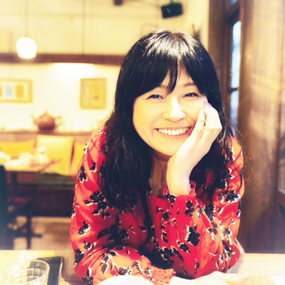

Cherry Studio Lab
I'm Cherry — a 55-year-old Tokyo-based creator sharing my solo life, original music, and honest thoughts with the world.

About Cherry
After 18 years at a multinational corporation, I left to build life entirely on my own terms. I share that journey — my philosophy, my taste, my quiet Tokyo life — with a global audience across YouTube, music, and writing.
Everything I create is original. Just my world, made from scratch.
What I do
Five interconnected projects — all original, all made by me.
💌 Letter Club
A physical snail mail subscription — handwritten letters and seasonal surprises delivered to your door every month.
📚 Lesson
Real 1-on-1 Japanese conversation practice, made for people who already study on their own and just want to speak.
🛍️ Shop
Original goods from Cherry Studio Lab — the studio behind everything I make.
Stay in the loop
A quick peek — follow along on each platform for everything else.
Get in touch
For collaborations, sponsorships, and press inquiries.
Scan to follow on your phone